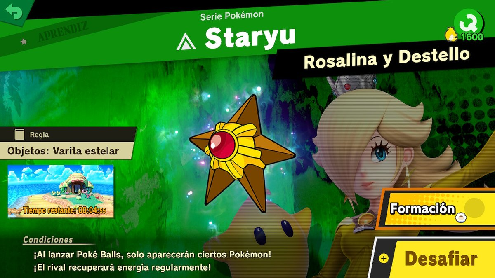

Super Smash Bros Ultimate: Reseña
El día Viernes 07 de Diciemrbre del presente, se liberó por fin uno de los juegos más esperados del año, no hablo de nada más y nada menos que Super Smash Bros Ultimate para Nintendo Switch.
En el Blog del Mayu, hemos querido compartir nuestra modesta opinión del juego, el cual como no podía ser de otra manera, hemos tratado de explorar a detalle.
1. Menú
Empezaré por comentar un punto que a veces pasa algo desapercibido, "El Menú de Juego".
En este caso me parece que está muy bien logrado, haciendo uso de una estética que cae muy bien con la temática del juego (osea que es un menú genial para un Super Smash). Consta de cinco secciones que se encuentran muy bien distribuidas y que en mi opinión proveen según se seleccionen un acceso rápido a lo que se busca. Además de las cinco secciones principales cuenta con una barra lateral en la que se podrán acceder a funciones adicionales y un botón para acceder desde el juego a la Nintendo Eshop (claro de contar con una en el país de la cuenta que estemos usando).
En el caso del menú obviaremos darle una calificación por no ser un punto demasiado relevante como tal.
2. Sobre el Sistema de Combate
Mi modesta opinión sobre el sistema de combate es que está muy bien logrado para lo que son los juegos de lucha actuales, sin embargo está algo lejos del Super Smash de Nintendo 64 o el Super Smash Melee de Game Cube para acercarse más a lo que serían las versiones posteriores (Wii, 3DS y Wii U). En lo que me baso para dar esta opinión es que por ejemplo tanto en las versiones de 64 como Game Cube, el juego consistía más en castigar errores llegando en muchos casos a hacerte caer en un combo casi infinito solo por fallar un golpe cargado, en la versión actual las peleas consisten más en baiteos por así decirlo de habilidades rivales para causar pequeños montos de daño (cheap damage), puesto que con la nueva incorporación del esquive aéreo y el bloqueo sincronizado es casi impensable lograr los combos infinitos de antaño (esto último no podría decir si es un cambio positivo o negativo, creo que queda a criterio de cad quien).
Otro punto a mencionar son los golpes críticos que en su mayoría se logran después de haber causado cierta cantidad de daño al oponente y consisten en asestar un golpe contundente a fin de cerrar el combate, esto en mi opinión es un gran acierto dentro de la franquicia de Super Smash ya que en entregas anteriores existían personajes que toleraban una gran cantidad de daño y eran algo complicados de bajar, los golpes críticos aportan una nueva alternativa para estos casos. Cabe señalar que existen personajes que pueden lograr golpes críticos sin necesidad de generar daño previo un ejemplo podrían ser Jigglypuff (↓B) o Luigi (↑B).
Finalmente le daremos como calificación al Sistema de Combates un: 9
3. Sobre el apartado visual
En este caso debo decir que no soy un gran experto en temas visuales, pero basta con detenerse y hacer zoom a un personaje para ver que se ha cuidado muchísimo cada detalle. Puede ser redundante pero como todos los juegos AAA de Nintendo Switch, Super Smash Ultimate se visualiza en una resolución de 1080 en modo Dock (TV) y en 720 en modo Portátil y Sobremesa.

Sin más que comentar sobre este punto le daremos de puntuación un: 10
4. Sobre el apartado sonoro
El apartado sonoro de Super Smash Bros Ultimate, me atrevería a decir que es algo nunca antes visto en ningún videojuego contando con más de 800 canciones dentro de su banda sonora. A esto sumarle que podemos encontrar temas muy míticos dentro una herramienta muy útil como es la Fonoteca.
La calificación que le daremos al apartado sonoro será un: 10
5. Modo Aventura
Así es, tal como lo leen, Super Smash Bros Ultimate es un juego de lucha que cuenta con un modo aventura que vendría a ser el Mundo de los Espíritus Perdidos, pues bien, este modo consiste como no, en enfrentarse en combates contra distintos personajes del juego los cuales tienen algunas alteraciones en sus estilos dependiendo de los espíritus que tengan asociados, asimismo a fin de vencerlos nosotros también podremos ir acompañados de espíritus, los cuales mejorarán nuestras capacidades de combate y en algunos casos nos dotarán de habilidades exclusivas, por ejemplo un triple salto o una espada de luz al iniciar el combate.

Por el simple hecho de haber invertido tanto tiempo en diseñar un modo aventura de calidad para un juego de luchas, ya estabamos más que convencidos de darle un: 10
5. En línea
Hasta el momento las calificaciones estaban bastante altas, pero eh aquí el punto más flaco del juego, el modo En línea (Online), durante los dos primeros días de salido el juego el online iba de maravilla, podían jugar hasta cuatro personas (desconocidos) al tiempo sin ningún tipo de problemas, pero desde el día Lunes 11, se han presentado por lo menos en mi caso que cuento con 120Mb/s, problemas de conexión (LAG).
Puedo decir casi a ciencia cierta, que son problemas puntuales de los servidores de Super Smash, ya que juegos como Mario Kart 8, Paladins o Warframe no presentan este problema. A esto debo añadir que no cuento con el dichoso dispositivo de red ethernet (ni pienso adquirirlo tampoco).
Los problemas de LAG pueden ir desde pequeños retrasos en la respuesta del control hasta casi frezeos del juego en el peor de los casos.
El reloj de la esquina de abajo a la derecha continuó durante 3 segundos hasta que el juego se defrezeo.
El día de hoy heché unas partidas en el online y no fue tan mal, pero sin duda debe mejorarse.
Viendo todo lo comentado anteriormente para el modo En línea, le daremos un: 6
6. Puntuación final
Así pues, hemos llegado a la parte final, en la que sumaremos la puntuación de todos los apartados y obtendremos el promedio.
Detalle: 9 + 10 + 10 + 10 + 6 = 45 / 5 = 9
Está claro que Super Smash Bros Ultimate, puede ser un juego de 10, pero hasta que no solucione sus problemas con el online no lo logrará, estaremos esperando anciosos el momento en que este todo apunto para colocarle el 10 debería tener. Espero la pasen muy bien, se despide El Mayu.